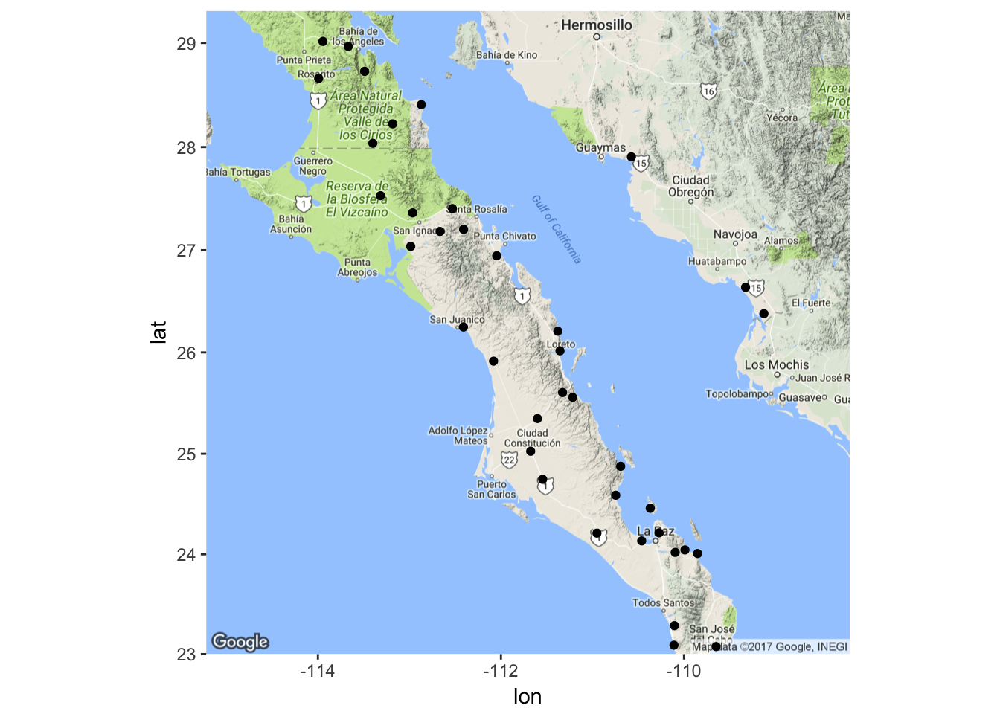
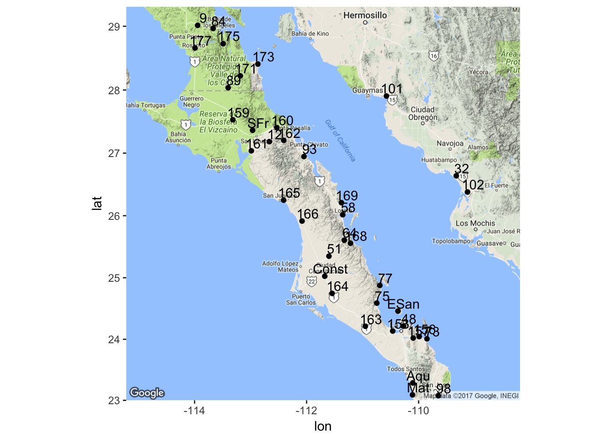
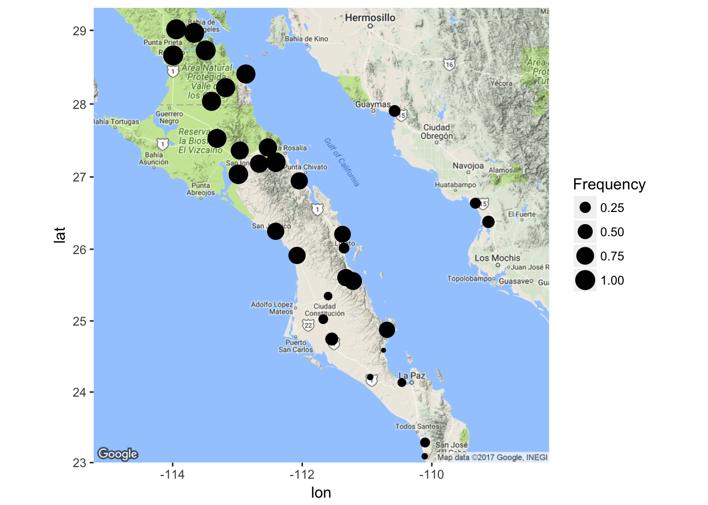
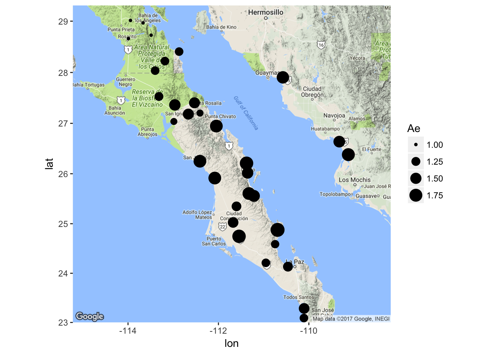

16 Mapping Populations

Almost every data set we will work on has a spatial context. Until relatively recently, this was largely ignored and at most given as a 2-dimensional projection of sampling locations on a black and white map in our manuscripts. Here we explore methodologies to provide more intuitive approaches for plotting the spatial location of our sampling sites.
16.1 Procedure
First, we need to load in the proper libraries. Each of the libraries are needed for:
- gstudio - Contains the A. attenuatus data set and there are built-in routines that allow you to plot populations in various formats or export the data in a format for plotting in other systems (e.g., GoogleEarth, ArcGIS, etc).
- ggmap - Allows the plotting of tiles from a googleMap.
- leaflet - Loads in the javascript leaflet library and allows the interactive visualization.
16.2 Plotting Population Locations
We will start by loading in the default data set for gstudio and using methods in that package for producing spatial plots.
# load in the libraries and grab the data
library(gstudio)
library(ggmap)
data(arapat)
# pull out the coordinates - Population is the default stratums
coords <- strata_coordinates(arapat)
coords$Stratum <- as.character( coords$Stratum )
coords[1:5,]## Stratum Longitude Latitude
## 1 88 -114.2935 29.32541
## 11 9 -113.9449 29.01457
## 20 84 -113.6679 28.96651
## 29 175 -113.4897 28.72796
## 36 177 -113.9914 28.66056# make a map (grabs from google) and plot it
map <- population_map(coords)
ggmap( map ) + geom_point( aes(x=Longitude,y=Latitude),data=coords)
We can extend this basic plotting by adding text to the plots indicating the population names (here I offset the coordinates by 0.1 & 0.12 degrees—a cheap trick but it works pretty well here).
p <- ggmap( map ) + geom_point( aes(x=Longitude,y=Latitude),data=coords)
p + geom_text( aes(x=Longitude+0.1,y=Latitude+0.12,label=Stratum), data=coords)
16.3 Population Allele Frequencies
It is also possible to plot the data in a spatial context. Here is an example of how to mix ggplot() and ggmap() data and I’ll plot the locations as proportional in size to the allele frequency.
# Break out allele frequencies for LTRS by population
f <- frequencies(arapat,loci="LTRS",stratum="Population")
# lets only use the allele 01
f <- f[ f$Allele=="01",]
# here are what the data look like
f[1:10,]## Stratum Locus Allele Frequency
## 1 101 LTRS 01 0.2777778
## 3 102 LTRS 01 0.3125000
## 5 12 LTRS 01 0.8000000
## 7 153 LTRS 01 0.1500000
## 11 159 LTRS 01 0.8888889
## 13 160 LTRS 01 0.8000000
## 15 161 LTRS 01 0.9500000
## 17 162 LTRS 01 0.9500000
## 19 163 LTRS 01 0.1000000
## 21 164 LTRS 01 0.3500000and then use those frequencies as image size.
# merget the frequencies into the coordinate data.frame
coords <- merge( coords, f[,c(1,4)])
ggmap( map ) + geom_point( aes(x=Longitude,y=Latitude,size=Frequency),data=coords)
or for observed effective allele size
# grab effect for LTRS locus
ae <- genetic_diversity(arapat, stratum = "Population", mode="Ae")
ae <- ae[ ae$Locus=="LTRS",]
# merge in the data
coords <- merge( coords, ae[,c(1,3)])
ggmap( map ) + geom_point( aes(x=Longitude,y=Latitude,size=Ae),data=coords)
There is also the option to make use of some pie charts. I know, pie charts suck and any statistician will tell you that they should probably not be used because they can be misleading, but here they are. For exploratory data analysis, they can be very insightful at times. Here is the frequency of alleles at the enolase locus in Araptus. Any spatial structuring catch your eye?
pies_on_map( arapat, stratum="Population", locus="EN")Which will open a new browser window and produce a graph like the one below.
Note the messages about the approximation. This is because the google maps API has an integer for zoom factor and at times it is not able to get all the points into the field of view using an integer zoom. If this happens to you, you can manually specify the zoom as an optional argument to either function pies_on_map() or population_map(). You also need to be careful with the pies_on_map() function because the way it works is that the background tile is plotted and then I plot the pies ontop of it. If you reshape your plot window outside equal x- and y- coordinates (e.g., make it a non-square figure), the spatial location of the pie charts will move! This is a very frustrating thing but it has to do with the way viewports are overlain onto graphical objects in R and I have absolutely no control over it. So, the best option is to make the plot square, export it as PNG or TIFF or whaterver, then crop as necessary.
16.4 Dynamic maps
We can also produce dynamic maps for viewing in html output (like ebooks or webpages). Here I produce a leaflet map and then add markers on to the file using coordinates and put the clicked popup as the population name. This is an interactive map, you can zoom in, etc.
library(leaflet)
map <- addTiles( leaflet( data=coords) )
map <- addMarkers( ~Longitude, ~Latitude, popup=~Stratum , map=map)
mapYou notice the interesting %>% operator? This is short-hand that may be very helpful for you. It is part of the magrittr library, and is often imported through dplyr and not directly. However, what it does is allow us to be a bit more succinct that does essentially the same thing as
You can change the underlying base map by passing on other Tiles to the construction. A list of available tile providers can be found here.
map <- leaflet( data=coords )
map <- addProviderTiles("MapQuestOpen.Aerial", map=map)
addMarkers( ~Longitude, ~Latitude, popup=~Stratum, map=map)Or you can add custom images for the map relative to some meaningful information.
coords$Size <- log(coords$Ae) * 10 + 1
addCircleMarkers( ~Longitude, ~Latitude, popup=~Stratum, radius=~Size, color="red", fillOpacity=0.75, data = coords, map = map) In the information that pops out of the marker, you can put a bit more information that may be helpful. Here I estimate some diversity measures (HO, HE, and AE).
x <- genetic_diversity(arapat,stratum = "Population",mode="Ho")
x <- x[ x$Locus == "LTRS",]
coords <- merge( coords, x[,c(1,3)])
x <- genetic_diversity(arapat,stratum = "Population",mode="He")
x <- x[ x$Locus == "LTRS",]
coords <- merge( coords, x[,c(1,3)])
x <- genetic_diversity(arapat,stratum = "Population",mode="Ae")
x <- x[ x$Locus == "LTRS",]
coords <- merge( coords, x[,c(1,3)])Make these data into a table format in html (OK it is a bit ugly but it is reasonable.)
coords$label <- paste("<h2>",coords$Stratum,"</h2><table><tr><th>Parameter</th><th>Value</th></tr><tr><td>H<sub>O</sub></td><td>", format(coords$Ho,digits = 3),"</td></tr><tr><td>H<sub>E</sub></td><td>",format(coords$He, digits=3), "</td></tr><tr><td>A<sub>E</sub></td><td>",format(coords$Ae,digits=3),"</td></tr></table>",sep="")
# plot it
map <- addTiles( leaflet( data=coords) )
addCircleMarkers( ~Longitude, ~Latitude, popup=~label, radius=~Size, color="red", fillOpacity=0.75, map = map, data = coords) 16.4.1 Sankey Networks
A Sankey Diagram is a kind of flow diagram used to indicate allocation of one set of object into two other sets. This is a complicated set of interactions to display. In the following example, I’ll use the populations from the A. attenuata data set and then map each individual onto its STRUCTURE cluster and mtDNA clade. This plot needs a data.frame for nodes and one for edges created in a particular way.
require(networkD3)
pops <- as.character(unique(arapat$Population))
species <- as.character(unique(arapat$Species))
cluster <- as.character(unique(arapat$Cluster))
sankey.nodes <- data.frame( name = c( pops, species, cluster),
stringsAsFactors = FALSE)
# takes vector of values and finds out the number of times
# each combination is found in the pair.
get_sets <- function( source, target ) {
t <- table(source, target)
m <- which( t > 0, arr.ind = TRUE)
suppressWarnings( df <- data.frame( ind=m ) )
df$source <- rownames(t)[df$ind.source]
df$target <- colnames(t)[df$ind.target]
df$value <- sapply(seq(1,dim(df)[1]),
function(x) {
return(t[df$ind.source[x],df$ind.target[x]])
})
return( df[,3:5] )
}
# For finding the number of the name instead of the name
nameIndex <- function(vals,names){
ret <- sapply( vals, function(x) {which(x==names)-1}, USE.NAMES = FALSE)
return(ret)
}
sankey.edges <- rbind( get_sets(arapat$Species,arapat$Population),
get_sets(arapat$Population, arapat$Cluster) )
sankey.edges$targetNum <- nameIndex(sankey.edges$target, sankey.nodes$name)
sankey.edges$sourceNum <- nameIndex(sankey.edges$source, sankey.nodes$name)What it does produce is a very cool and dynamic plot. The colored boxes represeent the groups–Species & STRUCTURE Cluster on the outside, population on the inside. Connecting lines indicate individuals who are in each of these partially overlapping groups. For example, if you grab the population Mat, you will see it has samples in it who are identified as either mtDNA type Peninsual or Cape as well as belonging to STRUCTURE groups CBP-C and SCBP-A. If you have difficult data such as these, this kind of plot may be very helpful.
sankeyNetwork( Links=sankey.edges, Nodes=sankey.nodes,
Source = "sourceNum", Target = "targetNum",
Value = "value", NodeID = "name",
width = 700, fontSize = 12, nodeWidth = 30)